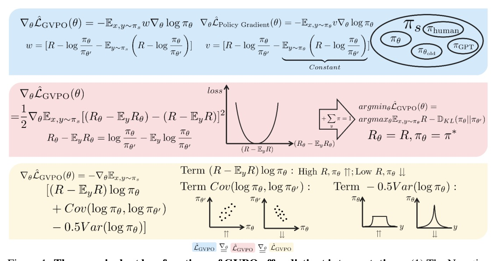
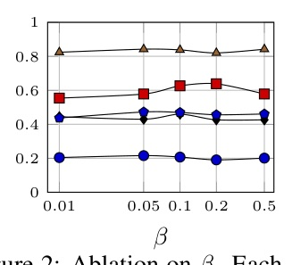
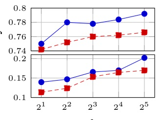
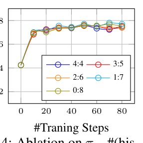

主問題很直接：GRPO 類 LLM RL 好用，但 off-policy / clipping / KL 係數讓訓練脆。GVPO 把 KL-constrained optimal policy 的閉式解塞進 group-wise 權重，試圖同時拿到穩定性與 sampling 彈性。
GVPO 把「reward 差距」改寫成「group 內 centered implicit reward 要貼近 centered actual reward」。
πθ/πold，policy drift 會造成 gradient explosion；clip 又會引入 bias。Z(x) 需要對所有 response 求期望，實務上不可估。Σiwi = 0。Σiwi β log Z(x) = 0，partition function 在 update rule 裡自然抵消。log ratioi 是 log πθ(yi|x) / πθ′(yi|x)，對應 implicit reward。Σwi=0。
Db。πθold ← πθ。πs 抽 k 個 responses。πθ′ = πθold。πs：它不必等於目前 policy。GVPO 的穩定性來自一個 MSE：讓 policy ratio 隱含出的相對 reward 幾何，貼近真實 reward 幾何。
πθ/πs importance ratio，所以避免 ratio explosion 與 clipping bias。(R - mean R) log πθ，推高 group 內高 reward response。Cov(log πθ, log πθ′)，約束 policy 不要偏離 old/reference，類似 trust-region。Var(log πθ)，在 exploration/exploitation 間取得穩定平衡，不靠手調 entropy coefficient。| Method | AIME24 | AMC | MATH500 | Minerva | Olympiad |
|---|---|---|---|---|---|
| Base | 14.68 | 38.55 | 64.00 | 27.20 | 30.66 |
| +GRPO | 14.79 | 55.42 | 80.00 | 41.17 | 42.07 |
| +Dr.GRPO | 16.56 | 48.19 | 81.20 | 44.48 | 43.40 |
| +Remax | 17.19 | 60.24 | 82.00 | 40.44 | 45.19 |
| +Reinforce++ | 16.67 | 54.22 | 80.40 | 43.01 | 41.78 |
| +GVPO | 20.72 | 62.65 | 83.80 | 45.95 | 46.96 |



| Variant | AIME24 | AMC | MATH500 | Minerva | Olympiad |
|---|---|---|---|---|---|
| GVPO | 20.72 | 62.65 | 83.80 | 45.95 | 46.96 |
| GVPO - Var | 0.00 | 0.00 | 0.00 | 0.00 | 0.00 |
| GVPO - Cov | 0.00 | 0.00 | 0.00 | 0.00 | 0.00 |
| GVPO - Var - Cov | 7.19 | 39.76 | 73.00 | 34.93 | 35.70 |
| Var replaced by Entropy | 0.00 | 0.00 | 0.00 | 0.00 | 0.00 |
| Check | GRPO | GVPO | Observation |
|---|---|---|---|
| 10 seeds · AIME24 | 13.59±1.11 | 15.56±1.05 | 平均更高，std 同量級 |
| 10 seeds · MATH500 | 76.30±1.35 | 77.36±0.98 | 穩定略高 |
| Llama-3.1 · AIME24 | 8.54 | 11.56 | 換 base model 仍提升 |
| Llama-3.1 · MATH500 | 52.60 | 56.60 | generalization check |
| Method | Reward | Win rate | Accuracy | GPT-4o | Human |
|---|---|---|---|---|---|
| SFT | 2.84 | 41.85% | - | - | - |
| +DPO | 4.83 | 68.28% | 60.43% | 31% | 34% |
| +GVPO | 5.75 | 79.49% | 64.93% | 69% | 66% |
如果你已經有 GRPO/RLVR 管線，GVPO 最值得測的是「是否能用 replay / mixed sampling 降低 rollout 成本而不炸」。
“when the sum of assigned response weights within a prompt group equals zero, the partition function becomes invariant across compared responses, effectively canceling out in the policy update rule.”
當同一 prompt group 的權重和為 0，閉式最優策略裡最麻煩的 partition function 會在比較中抵消，這是 GVPO 可實作的關鍵。Introduction p.2 / §3.1 p.5
“GVPO’s gradient mathematically equals that of a mean squared error loss measuring the discrepancy between implicit and actual reward central distances.”
GVPO 不是只調一個 heuristic 權重；它等價於讓 policy ratio 隱含出的相對 reward 幾何去貼近真實 reward 幾何。§3.2 p.5
“GVPO retains the theoretical guarantee of a unique optimal solution under any sampling distribution that satisfies a mild condition.”
只要 sampling distribution 的 support 蓋住 reference policy，GVPO 就保有唯一最優解，這讓 off-policy / replay / 混合資料成為理論上合理的選項。§3.3 p.6
“In both cases, the model fails to converge and generates incoherent outputs, indicating that each term plays a crucial role in stabilizing training.”
拿掉 Var 或 Cov 都直接訓練失敗，表示穩定性不是加分項，而是 GVPO 這個 objective 站得住的必要結構。Table 2 analysis p.10
今天的 takeaway：GVPO 的 claim 不是「更會調 GRPO」，而是把 optimal policy 的 closed-form geometry 變成 group-wise weights。